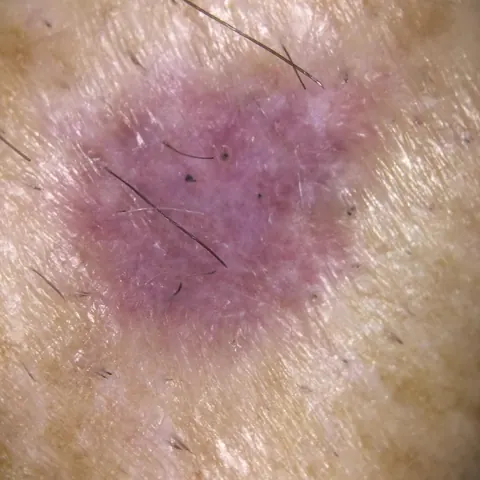
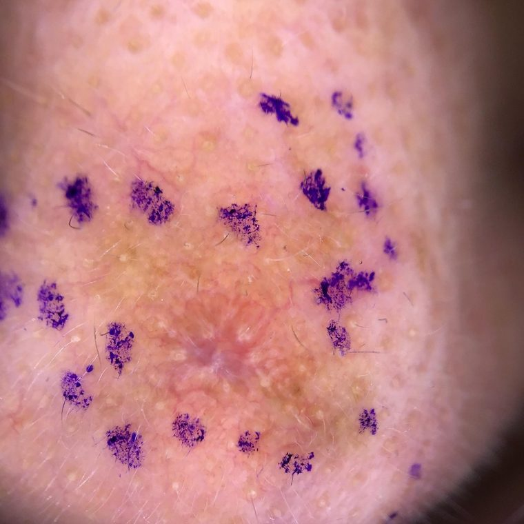
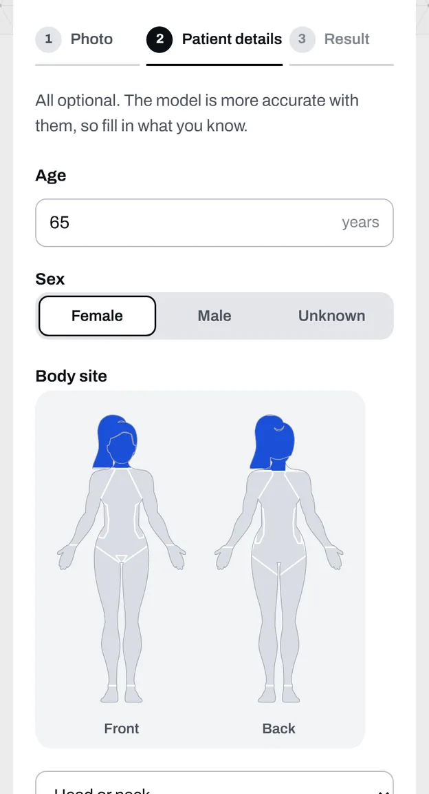

Know which skin spots need a dermatologist first
Nevio reads a dermoscopic photo together with the patient's details and suggests how soon to refer. The clinician decides.
Every spot lands in one of three groups
Melanoma, other skin cancer (basal and squamous cell carcinoma), or benign. Every photo here was confirmed by biopsy, and none was used to train the model.




What the patient's details change
One biopsy-confirmed melanoma, scored by the real research model as a clinician adds each detail. Scroll or pick a step, and watch the pigment network behind the page turn irregular as melanoma rises.

- Melanoma82%
- Benign17%
- Other skin cancer2%
Refer urgentlyMelanoma 82%. The biopsy confirmed melanoma.



It fits inside a normal visit
Real screens from the research app, running the case above. All a clinic needs is a computer or phone it already has, and a clip-on dermatoscope.
- 1
Photograph the spot
Through a clip-on dermatoscope. The app checks focus, exposure and contrast before it scores.
- 2
Add the patient's details
Age, sex, body site and a few short answers. Every field is optional, and each one can change the answer.
- 3
Read the suggestion
Three scores, one suggestion and a referral note to print. The clinician makes the call.
Tested on 9,080 biopsy-confirmed images it never saw
Each grid stands for 200 test images, in the same proportions as the full results. These come from a held-out test set, not a clinical study.
180 of 200
melanomas scored above the 27.8% cutoff, so Nevio suggested an urgent referral
FlaggedMissed
163 of 200
other spots scored below the cutoff and were not flagged for melanoma
Left aloneFlagged anyway
- Melanoma AUC
- 0.940
- How well the melanoma score ranks melanoma above everything else. 1.0 is perfect, 0.5 is a coin flip.
- Three-class AUC
- 93.2%
- Across melanoma, other skin cancer and benign
- Three-class accuracy
- 78.6%
- The top score matched the biopsy. Nevio is tuned to flag borderline spots rather than miss a cancer.
What these numbers don't show
- It was one 80/20 split of ISIC Archive images, with 36,320 used for training and 9,080 held out for testing.
- The cutoff was set on those same test images, so a fully separate test set comes next, followed by testing in clinics.
- Public skin image collections have few images of darker skin, so ours does too. Fixing that is a main goal of the pilots.
Photos never leave the room
The model runs in the browser on the clinic's own computer or phone. No photo or patient detail is uploaded, to us or anyone else.
- 21 MB
- The whole model. Smaller than a few phone photos, so an ordinary browser can run it.
- Offline
- After the first load, no internet is needed for a result.
- On the device
- Patient details stay on the same device as the photo.
Who is building it
For years, Jason's mom waited, even with good insurance, to learn whether a growth on her leg was dangerous. Nevio started as his research project to shorten that wait. The four of us met at a summer camp and build it together.
- First place, Computer Science, 2026 Delaware Valley Science Fair
- Paper accepted to IEEE HealthCom 2026
- JasonCEO and CTO
Trained the model and built the research app.
- DaisyCMO
Leads marketing and how clinics hear about Nevio.
- KennyCOO
Leads operations, market sizing and competitive analysis.
- JamesCFO
Leads finances, the pitch and problem research.
Request a free research pilot
For primary care practices and community health centers in southeastern Pennsylvania, starting 2027. No cost and no commitment.
Questions clinics ask
Is Nevio FDA-cleared?
No. Nevio is an investigational research tool. It is not FDA-cleared or approved, and it is not for sale. In pilots, clinicians make every decision.
Does Nevio diagnose skin cancer?
No. It gives three scores and one triage suggestion: refer urgently, refer for review, or routine follow-up. Diagnosis stays with clinicians and biopsy.
Where do the photos go?
Nowhere. The model runs in the browser on the clinic's own device, so photos and patient details are not uploaded to us.
What equipment does a clinic need?
A computer or phone with a modern browser, and a clip-on polarized dermatoscope. Pilot clinics get a dermatoscope to use during the study.
How well does it work on darker skin?
We don't know enough yet. Public skin image collections have few images of darker skin, so ours does too. Testing on more skin tones is a main goal of the pilots.
What does a pilot involve?
Nevio at no cost for the study, in-person setup and staff training, and a summary comparing Nevio's suggestions with dermatologists' decisions and biopsy results.